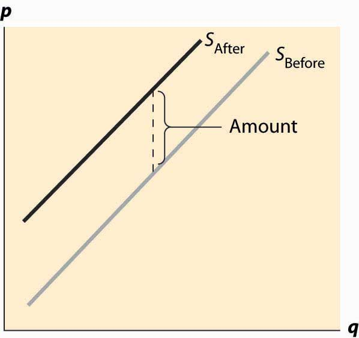
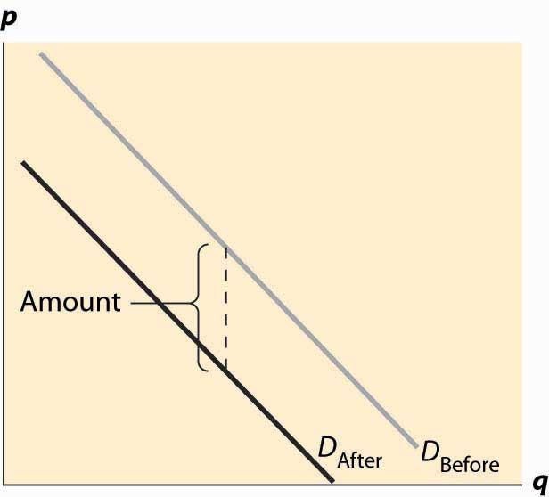
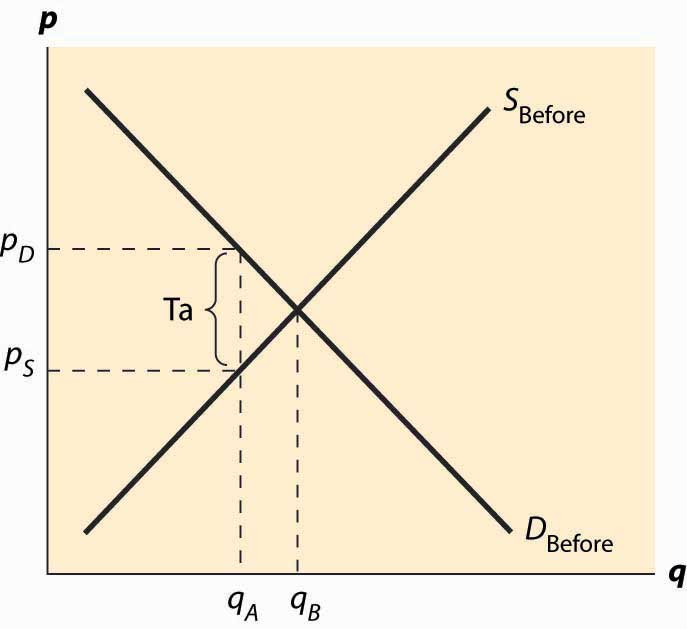
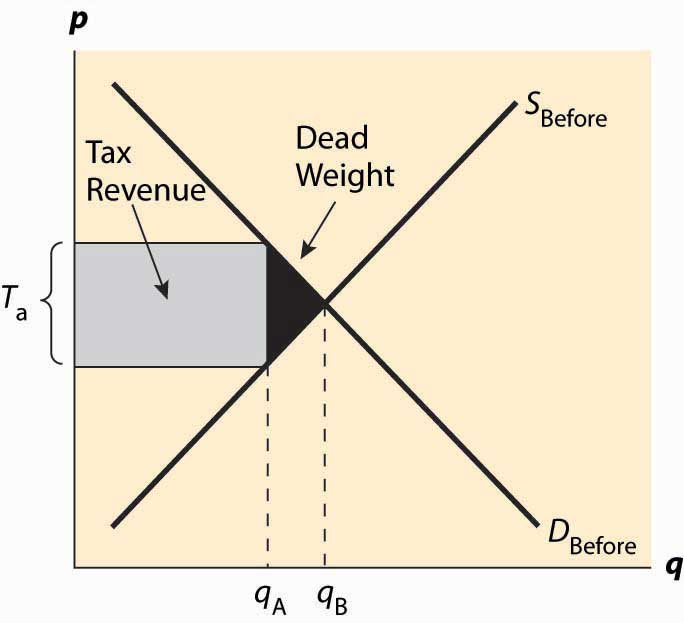

We have so far focused on unimpeded markets, and we saw that markets may perform efficiently.The standard term for an unimpeded market is a free market, which is free in the sense of “free of external rules and constraints.” In this terminology, eBay is a free market, even though it charges for the use of the market. In this and subsequent chapters, we examine impediments to the efficiency of markets. Some of these impediments are imposed on otherwise efficiently functioning markets, as occurs with taxes. Others, such as monopoly or pollution, impede efficiency in some circumstances, and government may be used to mitigate the problems that arise.
This chapter analyzes taxes. There are a variety of types of taxes, such as income taxes, property taxes, ad valorem (percentage of value) taxes, and excise taxes (taxes on a specific good like cigarettes or gasoline). Here, we are primarily concerned with sales taxes, which are taxes on goods and services sold at retail. Our insights into sales taxes translate naturally into some other taxes.
Consider first a fixed, per-unit tax such as a 20-cent tax on gasoline. The tax could either be imposed on the buyer or the supplier. It is imposed on the buyer if the buyer pays a price for the good and then also pays the tax on top of that. Similarly, if the tax is imposed on the seller, the price charged to the buyer includes the tax. In the United States, sales taxes are generally imposed on the buyer—the stated price does not include the tax—while in Canada, the sales tax is generally imposed on the seller.
An important insight of supply and demand theory is that it doesn’t matter—to anyone—whether the tax is imposed on the supplier or the buyer. The reason is that ultimately the buyer cares only about the total price paid, which is the amount the supplier gets plus the tax; and the supplier cares only about the net to the supplier, which is the total amount the buyer pays minus the tax. Thus, with a a 20-cent tax, a price of $2.00 to the buyer is a price of $1.80 to the seller. Whether the buyer pays $1.80 to the seller and an additional 20 cents in tax, or pays $2.00, produces the same outcome to both the buyer and the seller. Similarly, from the seller’s perspective, whether the seller charges $2.00 and then pays 20 cents to the government, or charges $1.80 and pays no tax, leads to the same profit.There are two minor issues here that won’t be considered further. First, the party who collects the tax has a legal responsibility, and it could be that businesses have an easier time complying with taxes than individual consumers. The transaction costs associated with collecting taxes could create a difference arising from who pays the tax. Such differences will be ignored in this book. Second, if the tax is percentage tax, it won’t matter to the outcome; but the calculations are more complicated because a 10% tax on the seller at a seller’s price of $1.80 is different from a 10% tax on a buyer’s price of $2.00. Then the equivalence between taxes imposed on the seller and taxes imposed on the buyer requires different percentages that produce the same effective tax level. In addition, there is a political issue: Imposing the tax on buyers makes the presence and size of taxes more transparent to voters.
First, consider a tax imposed on the seller. At a given price p, and tax t, each seller obtains p – t, and thus supplies the amount associated with this net price. Taking the before-tax supply to be SBefore, the after-tax supply is shifted up by the amount of the tax. This is the amount that covers the marginal value of the last unit, plus providing for the tax. Another way of saying this is that, at any lower price, the sellers would reduce the number of units offered. The change in supply is illustrated in Figure 5.1 "Effect of a tax on supply".
Figure 5.1 Effect of a tax on supply
Now consider the imposition of a tax on the buyer, as illustrated in Figure 5.2 "Effect of a tax on demand". In this case, the buyer pays the price of the good, p, plus the tax, t. This reduces the willingness to pay for any given unit by the amount of the tax, thus shifting down the demand curve by the amount of the tax.
Figure 5.2 Effect of a tax on demand
In both cases, the effect of the tax on the supply-demand equilibrium is to shift the quantity toward a point where the before-tax demand minus the before-tax supply is the amount of the tax. This is illustrated in Figure 5.3 "Effect of a tax on equilibrium". The quantity traded before a tax was imposed was qB*. When the tax is imposed, the price that the buyer pays must exceed the price that the seller receives, by the amount equal to the tax. This pins down a unique quantity, denoted by qA*. The price the buyer pays is denoted by pD* and the seller receives that amount minus the tax, which is noted as pS*. The relevant quantities and prices are illustrated in Figure 5.3 "Effect of a tax on equilibrium".
Figure 5.3 Effect of a tax on equilibrium
Also noteworthy in this figure is that the price the buyer pays rises, but generally by less than the tax. Similarly, the price that the seller obtains falls, but by less than the tax. These changes are known as the incidence of the taxChanges in the price paid for a good based on the amount of tax on the good.—a tax mostly borne by buyers, in the form of higher prices, or by sellers, in the form of lower prices net of taxation.
There are two main effects of a tax: a fall in the quantity traded and a diversion of revenue to the government. These are illustrated in Figure 5.4 "Revenue and deadweight loss". First, the revenue is just the amount of the tax times the quantity traded, which is the area of the shaded rectangle. The tax raised, of course, uses the after-tax quantity qA* because this is the quantity traded once the tax is imposed.
Figure 5.4 Revenue and deadweight loss
In addition, a tax reduces the quantity traded, thereby reducing some of the gains from trade. Consumer surplus falls because the price to the buyer rises, and producer surplus (profit) falls because the price to the seller falls. Some of those losses are captured in the form of the tax, but there is a loss captured by no party—the value of the units that would have been exchanged were there no tax. The value of those units is given by the demand, and the marginal cost of the units is given by the supply. The difference, shaded in black in the figure, is the lost gains from trade of units that aren’t traded because of the tax. These lost gains from trade are known as a deadweight lossThe buyer’s values minus the seller’s costs of units that are not economic to trade because of a tax or other interference in the market.. That is, the deadweight loss is the buyer’s values minus the seller’s costs of units that are not economic to trade only because of a tax or other interference in the market. The net lost gains from trade (measured in dollars) of these lost units are illustrated by the black triangular region in the figure.
The deadweight loss is important because it represents a loss to society much the same as if resources were simply thrown away or lost. The deadweight loss is value that people don’t enjoy, and in this sense can be viewed as an opportunity cost of taxation; that is, to collect taxes, we have to take money away from people, but obtaining a dollar in tax revenue actually costs society more than a dollar. The costs of raising tax revenues include the money raised (which the taxpayers lose), the direct costs of collection, like tax collectors and government agencies to administer tax collection, and the deadweight loss—the lost value created by the incentive effects of taxes, which reduce the gains for trade. The deadweight loss is part of the overhead of collecting taxes. An interesting issue, to be considered in the subsequent section, is the selection of activities and goods to tax in order to minimize the deadweight loss of taxation.
Without more quantification, only a little more can be said about the effect of taxation. First, a small tax raises revenue approximately equal to the tax level times the quantity, or tq. Second, the drop in quantity is also approximately proportional to the size of the tax. Third, this means the size of the deadweight loss is approximately proportional to the tax squared. Thus, small taxes have an almost zero deadweight loss per dollar of revenue raised, and the overhead of taxation, as a percentage of the taxes raised, grows when the tax level is increased. Consequently, the cost of taxation tends to rise in the tax level.
How much does the quantity fall when a tax is imposed? How much does the buyer’s price rise and the price to the seller fall? The elasticities of supply and demand can be used to answer this question. To do so, we consider a percentage tax t and employ the methodology introduced in Chapter 2 "Supply and Demand", assuming constant elasticity of both demand and supply. Let the equilibrium price to the seller be ps and the equilibrium price to the buyer be pb. As before, we will denote the demand function by qd(p) = ap-ε and supply function by qs(p) = bpη. These prices are distinct because of the tax, and the tax determines the difference:
pb = (1 + t)ps.Equilibrium requires
Thus,
This solves for
and
Finally,
Recall the approximation
Thus, a small proportional tax increases the price to the buyer by approximately and decreases the price to the seller by The quantity falls by approximately Thus, the price effect is mostly on the “relatively inelastic party.” If demand is inelastic, ε is small; then the price decrease to the seller will be small and the price increase to the buyer will be close to the entire tax. Similarly, if demand is very elastic, ε is very large, and the price increase to the buyer will be small and the price decrease to the seller will be close to the entire tax.
We can rewrite the quantity change as Thus, the effect of a tax on quantity is small if either the demand or the supply is inelastic. To minimize the distortion in quantity, it is useful to impose taxes on goods that either have inelastic demand or inelastic supply.
For example, cigarettes are a product with very inelastic demand and moderately elastic supply. Thus, a tax increase will generally increase the price by almost the entire amount of the tax. In contrast, travel tends to have relatively elastic demand, so taxes on travel—airport, hotel, and rental car taxes—tend not to increase the final prices so much but have large quantity distortions.
The presence of the deadweight loss implies that raising $1 in taxes costs society more than $1. But how much more? This idea—that the cost of taxation exceeds the taxes raised—is known as the excess burden of taxationThe amount by which the cost of taxation exceeds the taxes raised., or just the excess burden. We can quantify the excess burden with a remarkably sharp formula.
To start, we will denote the marginal cost of the quantity q by c(q) and the marginal value by v(q). The elasticities of demand and supply are given by the standard formulae
and
Consider an ad valoremAt value. (at value) tax that will be denoted by t, meaning a tax on the value, as opposed to a tax on the quantity. If sellers are charging c(q), the ad valorem tax is tc(q), and the quantity q* will satisfy v(q*) = (1 + t)c(q*).
From this equation, we immediately deduce
Tax revenue is given by Tax = tc(q*)q*.
The effect on taxes collected, Tax, of an increase in the tax rate t is
Thus, tax revenue is maximized when the tax rate is tmax, given by
The value is the monopoly markup rate, which we will meet when we discuss monopoly. Here it is applied to the sum of the inverse elasticities.
The gains from trade (including the tax) is the difference between value and cost for the traded units, and thus is
Thus, the change in the gains from trade as taxes increase is given by
The value tmax is the value of the tax rate t that maximizes the total tax taken. This remarkable formula permits the quantification of the cost of taxation. The minus sign indicates that it is a loss—the deadweight loss of monopoly, as taxes are raised, and it is composed of two components. First, there is the term which arises from the change in revenue as quantity is changed, thus measuring the responsiveness of revenue to a quantity change. The second term provides for the change in the size of the welfare loss triangle. The formula can readily be applied in practice to assess the social cost of taxation, knowing only the tax rate and the elasticities of supply and demand.
The formula for the excess burden is a local formula—it calculates the increase in the deadweight loss associated with raising an extra dollar of tax revenue. All elasticities, including those in tmax, are evaluated locally around the quantity associated with the current level of taxation. The calculated value of tmax is value given the local elasticities; if elasticities are not constant, this value will not necessarily be the actual value that maximizes the tax revenue. One can think of tmax as the projected value. It is sometimes more useful to express the formula directly in terms of elasticities rather than in terms of the projected value of tmax, in order to avoid the potential confusion between the projected (at current elasticities) and actual (at the elasticities relevant to tmax) value of tmax. This level can be read directly from the derivation shown below:
Let supply be given by p = q and demand by p = 1 – q. Suppose that a per-unit tax of 0.10 is applied.
A price floorThe minimum price at which a product or service is permitted to sell. is a minimum price at which a product or service is permitted to sell. Many agricultural goods have price floors imposed by the government. For example, tobacco sold in the United States has historically been subject to a quota and a price floor set by the Secretary of Agriculture. Unions may impose price floors as well. For example, the Screen Actors Guild (SAG) imposes minimum rates for guild members, generally pushing up the price paid for actors above what would prevail in an unconstrained market. (The wages of big-name stars aren’t generally affected by SAG because these are individually negotiated.) The most important example of a price floor is the minimum wageThe minimum amount that a worker can be paid per hour., which imposes a minimum amount that a worker can be paid per hour.
A price ceilingThe maximum price that can be charged for a product or service. is a maximum price that can be charged for a product or service. Rent control imposes a maximum price on apartments (usually set at the historical price plus an adjustment for inflation) in many U.S. cities. Taxi fares in New York, Washington, DC, and other cities are subject to maximum legal fares. During World War II, and again in the 1970s, the United States imposed price controls to limit inflation, imposing a maximum price for the legal sale of many goods and services. For a long time, most U.S. states limited the legal interest rate that could be charged (these are called usury lawsLaws that limit the legal interest rate that can be charged.), and this is the reason why so many credit card companies are located in South Dakota. South Dakota was the first state to eliminate such laws. In addition, ticket prices for concerts and sporting events are often set below the equilibrium price. Laws prohibiting scalping then impose a price ceiling. Laws preventing scalping are usually remarkably ineffective in practice, of course.
The theory of price floors and ceilings is readily articulated with simple supply and demand analysis. Consider a price floor—a minimum legal price. If the price floor is low enough—below the equilibrium price—there are no effects because the same forces that tend to induce a price equal to the equilibrium price continue to operate. If the price floor is higher than the equilibrium price, there will be a surplus because, at the price floor, more units are supplied than are demanded. This surplus is illustrated in Figure 5.5 "A price floor".
In Figure 5.5 "A price floor", the price floor is illustrated with a horizontal line and is above the equilibrium price. Consequently, at the price floor, a larger quantity is supplied than is demanded, leading to a surplus. There are units that are socially efficient to trade but aren’t traded—because their value is less than the price floor. The gains from trade associated with these units, which is lost due to the price floor, represent the deadweight loss.
The price increase created by a price floor will increase the total amount paid by buyers when the demand is inelastic, and otherwise will reduce the amount paid. Thus, if the price floor is imposed in order to be of benefit to sellers, we would not expect to see the price increased to the point where demand becomes elastic, for otherwise the sellers receive less revenue. Thus, for example, if the minimum wage is imposed in order to increase the average wages to low-skilled workers, then we would expect to see the total income of low-skilled workers rise. If, on the other hand, the motivation for the minimum wage is primarily to make low-skilled workers a less effective substitute for union workers, and hence allow union workers to increase their wage demands, then we might observe a minimum wage that is in some sense “too high” to be of benefit to low-skilled workers.
Figure 5.5 A price floor

Figure 5.6 Dead weight loss of a price floor

The deadweight loss illustrated in Figure 5.6 "Dead weight loss of a price floor" is the difference between the value of the units not traded—and value is given by the demand curve—and the cost of producing these units. It is represented by the shaded, triangular-shaped region.
However, this is the minimum loss to society associated with a price floor. Generally there will be other losses. In particular, the loss given above assumes that suppliers who don’t sell, don’t produce. As a practical matter, some suppliers who won’t sell in the end may still produce because they hope to sell. In this case, additional costs are incurred and the deadweight loss will be larger to reflect these costs.
Example: Suppose both supply and demand are linear, with the quantity supplied equal to the price and the quantity demanded equal to one minus the price. In this case, the equilibrium price and the equilibrium quantity are both ½. A price floor of p > ½ induces a quantity demanded of 1 – p. How many units will suppliers offer, if a supplier’s chance of trading is random? Suppose q ≥ 1 – p units are offered. A supplier’s chance of selling is Thus, the marginal supplier (who has a marginal cost of q by assumption) has a probability of earning p, and a certainty of paying q. Exactly q units will be supplied when this is a break-even proposition for the marginal supplier—that is, ,
The deadweight loss then includes not just the triangle illustrated in the previous figure, but also the cost of the unsold units.
The SAG, a union of actors, has some ability to impose minimum prices (a price floor) for work on regular Hollywood movies. If the SAG would like to maximize the total earnings of actors, what price should they set in the linear demand and supply example?
The effects of a price floor include lost gains from trade because too few units are traded (inefficient exchange), units produced that are never consumed (wasted production), and more costly units produced than necessary (inefficient production).
A price ceiling is a maximum price. Analogous to a low price floor, a price ceiling that is larger than the equilibrium price has no effect. Tell me that I can’t charge more than a billion dollars for this book (which is being given away for free), and it won’t affect the price charged or the quantity traded. Thus, the important case of a price ceiling is one that is less than the equilibrium price.
In this case, which should now look familiar, the price is forced below the equilibrium price and too few units are supplied, while a larger number are demanded, leading to a shortage. The deadweight loss is illustrated in Figure 5.7 "A price ceiling", and again represents the loss associated with units that are valued at more than they cost but aren’t produced.
Figure 5.7 A price ceiling

Analogous to the case of a price floor, there can be additional losses associated with a price ceiling. In particular, some lower-value buyers may succeed in purchasing, denying the higher-value buyers the ability to purchase. This effect results in buyers with high values failing to consume, and hence their value is lost.
In addition to the misallocation of resources (too few units and units not allocated to those who value them the most), price ceilings tend to encourage illegal trade as people attempt to exploit the prohibited gains from trade. For example, it became common practice in New York to attempt to bribe landlords to offer rent-controlled apartments, and such bribes could exceed $50,000. In addition, potential tenants expended a great deal of time searching for apartments, and a common strategy was to read the obituaries late at night when the New York Times had just come out, hoping to find an apartment that would be vacant and available for rent.
An important and undesirable by-product of price ceilings is discrimination. In a free or unconstrained market, discrimination against a particular group, based on race, religion, or other factors, requires transacting not based on price but on another factor. Thus, in a free market, discrimination is costly—discrimination entails, for instance, not renting an apartment to the highest bidder but to the highest bidder of the favored group. In contrast, with a price ceiling, there is a shortage; and sellers can discriminate at lower cost, or even at no cost. That is, if there are twice as many people seeking apartments as there are apartments available at the price ceiling, landlords can “pick and choose” among prospective tenants and still get the maximum legal rent. Thus, a price ceiling has the undesirable by-product of reducing the cost of discrimination.
Both demand and supply tend to be more elastic in the long run. This means that the quantity effects of price floors and ceilings tend to be larger over time. An extreme example of this is rent control, a maximum price imposed on apartments.
Rent control is usually imposed in the following way: As a prohibition or limitation on price increases. For example, New York City’s rent control, imposed during World War II, prevented landlords from increasing rent, even when their own costs increased, such as when property taxes increased. This law was softened in 1969 to be gradually replaced by a rent-stabilization law that permitted modest rent increases for existing tenants.
Figure 5.8 Rent control, initial effect

Thus, the nature of rent control is that it begins with, at most, minor effects because it doesn’t bind until the equilibrium rent increases. Moreover, the short-run supply of apartments tends to be extremely inelastic, because one doesn’t tear down an apartment or convert it to a condominium (there were limitations on this) or abandon it without a pretty significant change in price. Demand also tends to be relatively inelastic because one has to live somewhere, and the alternatives to renting in the city are to live a long distance away or to buy (which is relatively expensive), neither of which are very good substitutes for many consumers. Long-run demand and short-run demand are not very different and are treated as being identical. Finally, the long-run supply is much more elastic than the short-run supply because, in the long run, a price increase permits the creation of apartments from warehouses (lofts), rooms rented in houses, and so on. Thus, the apartment market in New York City is characterized by inelastic short-run supply, much more elastic long-run supply, and inelastic demand. This is illustrated in Figure 5.8 "Rent control, initial effect".
We start with a rent-control law that has little or no immediate effect because it is set at current rents. Thus, in the near term, tenants’ fears of price increases are eased and there is little change in the apartment rental market. This is not to say that there is zero effect—some companies considering construction of an apartment building on the basis of an expectation of higher future rents may be deterred, and a few marginal apartments may be converted to other uses because the upside potential for the owner has been removed, but such effects are modest at best.
Figure 5.9 Rent control, long-run effect

Over time, however, the demand for apartments grows as the city population and incomes grow. Moreover, as the costs of operating an apartment rise due to property tax increases, wage increases, and cost of maintenance increases, the supply is reduced. This has little effect on the short-run supply but a significant effect on the long-run supply. The supply reduction and demand increases cause a shortage but results in few apartments being lost because the short-run supply is very inelastic. Over time, however, apartments are withdrawn from the market and the actual quantity falls, even as the demand rises, and the shortage gets worse and worse. These changes are illustrated in Figure 5.9 "Rent control, long-run effect". Dashed gray lines illustrate the old values of demand, short-run supply, and long-run supply. The new values, reflecting an increase in demand, a fall in long-run supply, and a reduction in the number of available apartments (where the rent control covers the long-run cost) are shown in dark black lines.
The shortage is created by two separate factors—demand is increasing as incomes and population rise, and supply is decreasing as costs rise. This reduces the quantity of available housing units supplied and increases the demand for those units.
How serious is the threat that units will be withdrawn from the market? In New York City, over 200,000 apartment units were abandoned by their owners, usually because the legal rent didn’t cover the property taxes and legally mandated maintenance. In some cases, tenants continued to inhabit the buildings even after the electricity and water were shut off. It is fair to say that rent control devastated large areas of New York City, such as the Bronx. So why would New York City, and so many other communities, impose rent control on itself?
The politics of rent control are straightforward. First, rent control involves a money transfer from landlords to tenants, because tenants pay less than they would absent the law, and landlords obtain less revenue. In the short run, due to the inelastic short-run supply, the effect on the quantity of apartments is small, so rent control is primarily just a transfer from landlords to tenants.
In a city like New York, the majority of people rent. A tiny fraction of New Yorkers are landlords. Thus, it is easy to attract voters to support candidates who favor rent control—most renters will benefit, while landlords don’t. The numbers, of course, don’t tell the whole story because, while landlords are small in number, they are wealthier on average, and thus likely have political influence beyond the number of votes they cast. However, even with their larger economic influence, the political balance favors renters. In the 100ab zip codes of Manhattan (the first three digits are 100), 80% of families were renters in the year 2000. Thus, a candidate who runs on a rent-control platform appeals to a large portion of the voters.
Part of the attraction of rent control is that there is little economic harm in the short run, and most of that harm falls on new residents of New York City. As new residents generally haven’t yet voted in New York, potential harm to them has only a small effect on most existing New Yorkers, and thus isn’t a major impediment to getting voter support for rent control. The slow rate of harm to the city is important politically because the election cycle encourages a short time horizon—if successful at lower office, a politician hopes to move on to higher office and is unlikely to be blamed for the long-run damage to New York City by rent control.
Rent control is an example of a political situation sometimes called the tyranny of the majoritySituation where a majority of the people have an incentive to confiscate the wealth of a minority., where a majority of the people have an incentive to confiscate the wealth of a minority. But there is another kind of political situation that is in some sense the reverse, where a small number of people care a great deal about something, and the majority are only slightly harmed on an individual basis. No political situation appears more extreme in this regard than that of refined sugar. There are few U.S. cane sugar producers (nine in 1997), yet the U.S. imposes quotas that raise domestic prices much higher than world prices, in some years tripling the price that Americans pay for refined sugar. The domestic sugar producers benefit, while consumers are harmed. But consumers are harmed by only a small amount each—perhaps 12 to 15 cents per pound—which is not enough to build a consensus to defeat politicians who accept donations from sugar producers. This is a case where concentrated benefits and diffused costsSituation where a small number of people with strong incentives are able to expropriate a small amount per person from a large number of people. determine the political outcome. A small number of people with strong incentives are able to expropriate a small amount per person from a large number of people. Because there aren’t many sugar producers, it is straightforward for them to act as a single force. In contrast, it is pretty hard for consumers to become passionate about 12 cents per pound increase in the domestic sugar price when they consume about 60 pounds per year of sugar.
A price supportThe combination of a minimum price, or price floor, and government purchase of any surplus. is a combination of two programs—a minimum price, or price floor, and government purchase of any surplus. Thus, a price support is different from a price floor because, with a price floor, any excess production by sellers is a burden on the sellers. In contrast, with a price support, any excess production is a burden on the government.
The U.S. Department of Agriculture operates a price support for cheese and has possessed warehouses full of cheese in the past. There are also price supports for milk and other agricultural products.
Figure 5.10 Price supports

Figure 5.10 "Price supports" illustrates the effect of a support program. The government posts a minimum price it is willing to pay for a product, called the support priceThe minimum price the government is willing to pay for a product., and purchases any excess production offered on the market. The government purchases, which are the difference between the quantity supplied and quantity demanded, are illustrated in the figure. The cost of the program to the government is the support price times the quantity purchased, which is the area of the rectangle directly underneath the words “Gov’t Purchases.”
There are two kinds of deadweight loss in a price-support program. First, consumers who would like to buy at the equilibrium price are deterred by the higher prices, resulting in the usual deadweight loss, illustrated by the lighter shading. In addition, however, there are goods produced that are then either destroyed or put in warehouses and not consumed, which means the costs of production of those goods is also lost, resulting in a second deadweight loss. That loss is the cost of production, which is given by the supply curve, and is the area under the supply curve for the government purchases. It is shaded in a horizontal fashion. The total deadweight loss of the price support is the sum of these two individual losses. Unlike the case of a price floor or ceiling, a price support creates no ambiguity about what units are produced, or which consumers are willing and able to buy. Thus, the rationing aspect of a price floor or ceiling is not present for a price support, nor is the incentive to create a black market other than one created by selling the warehouse full of product.
The final common way that governments intervene in market transactions is to impose a quota. A quotaA maximal production quantity, usually set based on historical production. is a maximal production quantity, usually set based on historical production. In tobacco, peanuts, hops, California oranges, and other products, producers have production quotas based on their historical production. Tobacco quotas were established in the 1930s, and today a tobacco farmer’s quota is a percentage of the 1930s level of production. The Secretary of Agriculture sets the percentage annually. Agricultural products are not the only products with quotas. The right to drive a taxi in New York requires a medallion issued by the city, and there are a limited number of medallions. This is a quota. Is it a restrictive quota? The current price of a New York taxi medallion—the right to drive a taxi legally in New York City—is $413,000 (as of 2008). This adds approximately $30,000 to $40,000 annually to the cost of operating a taxi in New York, using a risk-adjusted interest rate.
What are the effects of a quota? A quota restricts the quantity below what would otherwise prevail, forcing the price up, which is illustrated in Figure 5.11 "A quota". It works like a combination of a price floor and a prohibition on entry.
Generally, the immediate effects of a quota involve a transfer of money from buyers to sellers. The inefficient production and surplus of the price floor are avoided because a production limitation created the price increase. This transfer has an undesirable and somewhat insidious attribute. Because the right to produce is a capital good, it maintains a value, which must be captured by the producer. For example, an individual who buys a taxi medallion today, and pays $400,000, makes no economic profits—he captures the forgone interest on the medallion through higher prices but no more than that. The individuals who receive the windfall gain are those who were driving taxis and were grandfathered in to the system and issued free medallions. Those people who were driving taxis 70 years ago—and are mostly dead at this point—received a windfall gain from the establishment of the system. Future generations pay for the program, which provides no net benefits to the current generation. All the benefits were captured by people long since retired.
Figure 5.11 A quota

Does this mean that it is harmless to eliminate the medallion requirement? Unfortunately, not. The current medallion owners who, if they bought recently, paid a lot of money for their medallions would see the value of these investments destroyed. Thus, elimination of the program would harm current medallion owners.
If the right to produce is freely tradable, the producers will remain the efficient producers, and the taxi medallions are an example of this. Taxi medallions can be bought and sold. Moreover, a medallion confers the right to operate a taxi, but doesn’t require that the owner of the medallion actually drive the taxi. Thus, a “medallion owning company” can lease the right to drive a taxi to an efficient driver, thereby eliminating any inefficiency associated with the person who drives the taxi.
In contrast, because tobacco-farming rights aren’t legally tradable across county lines, tobacco is very inefficiently grown. The average size of a burley tobacco farm is less than 5 acres, so some are much smaller. There are tobacco farms in Florida and Missouri, which only exist because of the value of the quota—if they could trade their quota to a farm in North Carolina or Kentucky, which are much better suited to producing cigarette tobacco, it would pay to do so. In this case, the quota, which locked in production rights, also locked in production that gets progressively more inefficient as the years pass.
Quotas based on historical production have the problem that they don’t evolve in ways that production methods and technology do, thus tending to become progressively more inefficient. Tradable quotas eliminate this particular problem but continue to have the problem that future generations are harmed with no benefits.